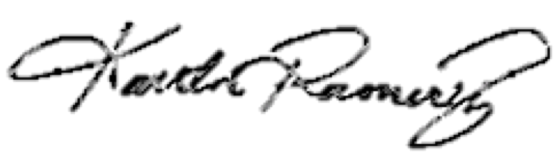

I hear it all.
But it never deters me.
In fact, their words inspire me to help others who are also facing challenges.
As a woman of color, almost anywhere I go, I can change the ratio.
But I know to make #changingtheratio longlasting needs more than one woman.
We need all women.
- William Gibson
Gibson's quote summarizes why I want to become a software developer.
I know what it's like to be left out...
that's why I want to share the future with all women, people of color, and different socio-economic backgrounds through code.
I adore Adies because they fight for the same change that I want to make happen.
Love,
Kaitlin Ramirez